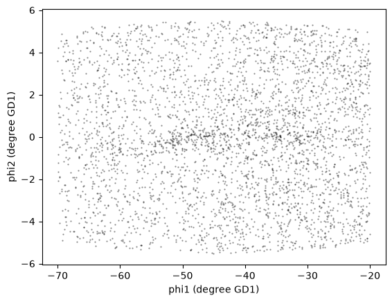

5. Joining Tables#
Click here to run this notebook on Colab. For the exercises, use the version with blanks.
This is the fifth in a series of notebooks related to astronomy data.
As a continuing example, we will replicate part of the analysis in a 2018 paper, “Off the beaten path: Gaia reveals GD-1 stars outside of the main stream” by Adrian M. Price-Whelan and Ana Bonaca.
Picking up where we left off, the next step in the analysis is to select candidate stars based on photometry data. The following figure from the paper is a color-magnitude diagram for the stars selected based on proper motion:

In red is a stellar isochrone, showing where we expect the stars in GD-1 to fall based on the metallicity and age of their original globular cluster.
By selecting stars in the shaded area, we can further distinguish the main sequence of GD-1 from younger background stars.
Outline#
Here are the steps in this notebook:
We’ll reload the candidate stars we identified in the previous notebook.
Then we’ll run a query on the Gaia server that uploads the table of candidates and uses a
JOINoperation to select photometry data for the candidate stars.We’ll write the results to a file for use in the next notebook.
After completing this lesson, you should be able to
Upload a table to the Gaia server.
Write ADQL queries involving
JOINoperations.
Getting photometry data#
The Gaia dataset contains some photometry data, including the variable bp_rp, which contains BP-RP color (the difference in mean flux between the BP and RP bands).
We use this variable to select stars with bp_rp between -0.75 and 2, which excludes many class M dwarf stars.
Now, to select stars with the age and metal richness we expect in GD-1, we will use g-i color and apparent g-band magnitude, which are available from the Pan-STARRS survey.
Conveniently, the Gaia server provides data from Pan-STARRS as a table in the same database we have been using, so we can access it by making ADQL queries.
In general, choosing a star from the Gaia catalog and finding the corresponding star in the Pan-STARRS catalog is not easy. This kind of cross matching is not always possible, because a star might appear in one catalog and not the other. And even when both stars are present, there might not be a clear one-to-one relationship between stars in the two catalogs.
Fortunately, smart people have worked on this problem, and the Gaia database includes cross-matching tables that suggest a best neighbor in the Pan-STARRS catalog for many stars in the Gaia catalog.
This document describes the cross matching process. Briefly, it uses a cone search to find possible matches in approximately the right position, then uses attributes like color and magnitude to choose pairs of observations most likely to be the same star.
The best neighbor table#
So the hard part of cross-matching has been done for us. Using the results is a little tricky, but it gives us a chance to learn about one of the most important tools for working with databases: “joining” tables.
In general, a “join” is an operation where you match up records from one table with records from another table using as a “key” a piece of information that is common to both tables, usually some kind of ID code.
In this example:
Stars in the Gaia dataset are identified by
source_id.Stars in the Pan-STARRS dataset are identified by
obj_id.
For each candidate star we have selected so far, we have the source_id; the goal is to find the obj_id for the same star (we hope) in the Pan-STARRS catalog.
To do that we will:
Use the
JOINoperator to look up eachsource_idin thepanstarrs1_best_neighbourtable, which contains theobj_idof the best match for each star in the Gaia catalog; thenUse the
JOINoperator again to look up eachobj_idin thepanstarrs1_original_validtable, which contains the Pan-STARRS photometry data we want.
Before we get to the JOIN operation, let’s explore these tables.
Here’s the metadata for panstarrs1_best_neighbour.
from astroquery.gaia import Gaia
meta = Gaia.load_table('gaiadr2.panstarrs1_best_neighbour')
print(meta)
TAP Table name: gaiadr2.panstarrs1_best_neighbour
Description: Pan-STARRS1 BestNeighbour table lists each matched Gaia object with its
best neighbour in the external catalogue.
There are 1 327 157 objects in the filtered version of Pan-STARRS1 used
to compute this cross-match that have too early epochMean.
Size (bytes): 98462015488
Num. columns: 7
And here are the columns.
for column in meta.columns:
print(column.name)
source_id
original_ext_source_id
angular_distance
number_of_neighbours
number_of_mates
best_neighbour_multiplicity
gaia_astrometric_params
Here’s the documentation for these variables .
The ones we’ll use are:
source_id, which we will match up withsource_idin the Gaia table.number_of_neighbours, which indicates how many sources in Pan-STARRS are matched with this source in Gaia.number_of_mates, which indicates the number of other sources in Gaia that are matched with the same source in Pan-STARRS.original_ext_source_id, which we will match up withobj_idin the Pan-STARRS table.
Ideally, number_of_neighbours should be 1 and number_of_mates should be 0; in that case, there is a one-to-one match between the source in Gaia and the corresponding source in Pan-STARRS.
Here’s a query that selects these columns and returns the first 5 rows.
query = """SELECT
TOP 5
source_id, number_of_neighbours, number_of_mates, original_ext_source_id
FROM gaiadr2.panstarrs1_best_neighbour
"""
job = Gaia.launch_job_async(query=query)
INFO: Query finished. [astroquery.utils.tap.core]
<Table length=5>
name dtype description
---------------------- ----- ---------------------------------------------
source_id int64 Unique Gaia source identifier
number_of_neighbours int32 Number of neighbours in External Catalogue
number_of_mates int16 Number of mates in Gaia Catalogue
original_ext_source_id int64 Original External Catalogue source identifier
results = job.get_results()
results
| source_id | number_of_neighbours | number_of_mates | original_ext_source_id |
|---|---|---|---|
| int64 | int32 | int16 | int64 |
| 6026904238158458368 | 1 | 2 | 69742540420101516 |
| 6613257841994975872 | 1 | 0 | 69743313109181287 |
| 6745788545500247168 | 1 | 0 | 69742908623551247 |
| 5463013240179703168 | 1 | 0 | 69741496817881194 |
| 6757938900605663744 | 1 | 0 | 69742889237711205 |
The Pan-STARRS table#
Here’s the metadata for the table that contains the Pan-STARRS data.
meta = Gaia.load_table('gaiadr2.panstarrs1_original_valid')
print(meta)
TAP Table name: gaiadr2.panstarrs1_original_valid
Description: The Panoramic Survey Telescope and Rapid Response System (Pan-STARRS) is
a system for wide-field astronomical imaging developed and operated by
the Institute for Astronomy at the University of Hawaii. Pan-STARRS1
(PS1) is the first part of Pan-STARRS to be completed and is the basis
for Data Release 1 (DR1). The PS1 survey used a 1.8 meter telescope and
its 1.4 Gigapixel camera to image the sky in five broadband filters (g,
r, i, z, y).
The current table contains a filtered subsample of the 10 723 304 629
entries listed in the original ObjectThin table.
We used only ObjectThin and MeanObject tables to extract
panstarrs1OriginalValid table, this means that objects detected only in
stack images are not included here. The main reason for us to avoid the
use of objects detected in stack images is that their astrometry is not
as good as the mean objects astrometry: “The stack positions (raStack,
decStack) have considerably larger systematic astrometric errors than
the mean epoch positions (raMean, decMean).” The astrometry for the
MeanObject positions uses Gaia DR1 as a reference catalog, while the
stack positions use 2MASS as a reference catalog.
In details, we filtered out all objects where:
- nDetections = 1
- no good quality data in Pan-STARRS, objInfoFlag 33554432 not set
- mean astrometry could not be measured, objInfoFlag 524288 set
- stack position used for mean astrometry, objInfoFlag 1048576 set
- error on all magnitudes equal to 0 or to -999;
- all magnitudes set to -999;
- error on RA or DEC greater than 1 arcsec.
The number of objects in panstarrs1OriginalValid is 2 264 263 282.
The panstarrs1OriginalValid table contains only a subset of the columns
available in the combined ObjectThin and MeanObject tables. A
description of the original ObjectThin and MeanObjects tables can be
found at:
https://outerspace.stsci.edu/display/PANSTARRS/PS1+Database+object+and+detection+tables
Download:
http://mastweb.stsci.edu/ps1casjobs/home.aspx
Documentation:
https://outerspace.stsci.edu/display/PANSTARRS
http://pswww.ifa.hawaii.edu/pswww/
References:
The Pan-STARRS1 Surveys, Chambers, K.C., et al. 2016, arXiv:1612.05560
Pan-STARRS Data Processing System, Magnier, E. A., et al. 2016,
arXiv:1612.05240
Pan-STARRS Pixel Processing: Detrending, Warping, Stacking, Waters, C.
Z., et al. 2016, arXiv:1612.05245
Pan-STARRS Pixel Analysis: Source Detection and Characterization,
Magnier, E. A., et al. 2016, arXiv:1612.05244
Pan-STARRS Photometric and Astrometric Calibration, Magnier, E. A., et
al. 2016, arXiv:1612.05242
The Pan-STARRS1 Database and Data Products, Flewelling, H. A., et al.
2016, arXiv:1612.05243
Catalogue curator:
SSDC - ASI Space Science Data Center
https://www.ssdc.asi.it/
Size (bytes): 933802426368
Num. columns: 26
And here are the columns.
for column in meta.columns:
print(column.name)
obj_name
obj_id
ra
dec
ra_error
dec_error
epoch_mean
g_mean_psf_mag
g_mean_psf_mag_error
g_flags
r_mean_psf_mag
r_mean_psf_mag_error
r_flags
i_mean_psf_mag
i_mean_psf_mag_error
i_flags
z_mean_psf_mag
z_mean_psf_mag_error
z_flags
y_mean_psf_mag
y_mean_psf_mag_error
y_flags
n_detections
zone_id
obj_info_flag
quality_flag
Here’s the documentation for these variables .
The ones we’ll use are:
obj_id, which we will match up withoriginal_ext_source_idin the best neighbor table.g_mean_psf_mag, which contains mean magnitude from thegfilter.i_mean_psf_mag, which contains mean magnitude from theifilter.
Here’s a query that selects these variables and returns the first 5 rows.
query = """SELECT
TOP 5
obj_id, g_mean_psf_mag, i_mean_psf_mag
FROM gaiadr2.panstarrs1_original_valid
"""
job = Gaia.launch_job_async(query=query)
INFO: Query finished. [astroquery.utils.tap.core]
<Table length=5>
name dtype unit description n_bad
-------------- ------- ---- -------------------------- -----
obj_id int64 Unique Object Identifier 0
g_mean_psf_mag float64 Mean magnitude in g filter 4
i_mean_psf_mag float64 mag Mean magnitude in i filter 0
results = job.get_results()
results
| obj_id | g_mean_psf_mag | i_mean_psf_mag |
|---|---|---|
| mag | ||
| int64 | float64 | float64 |
| 67130553357691441 | -- | 19.5795993804932 |
| 67130494816571356 | -- | 20.3157997131348 |
| 67132632684301366 | 20.3448009490967 | 17.4930000305176 |
| 67130584260971504 | -- | 20.0562000274658 |
| 67551342658827845 | -- | 21.5202007293701 |
The following figure shows how these tables are related.
The orange circles and arrows represent the first
JOINoperation, which takes eachsource_idin the Gaia table and finds the same value ofsource_idin the best neighbor table.The blue circles and arrows represent the second
JOINoperation, which takes eachoriginal_ext_source_idin the Gaia table and finds the same value ofobj_idin the best neighbor table.
There’s no guarantee that the corresponding rows of these tables are in the same order, so the JOIN operation involves some searching.
However, ADQL/SQL databases are implemented in a way that makes this kind of source efficient.
If you are curious, you can read more about it.

Joining tables#
Now let’s get to the details of performing a JOIN operation.
As a starting place, let’s go all the way back to the cone search from Lesson 2.
query_cone = """SELECT
TOP 10
source_id
FROM gaiadr2.gaia_source
WHERE 1=CONTAINS(
POINT(ra, dec),
CIRCLE(88.8, 7.4, 0.08333333))
"""
And let’s run it, to make sure we have a working query to build on.
from astroquery.gaia import Gaia
job = Gaia.launch_job_async(query=query_cone)
INFO: Query finished. [astroquery.utils.tap.core]
<Table length=10>
name dtype description
--------- ----- ------------------------------------------------------------------
source_id int64 Unique source identifier (unique within a particular Data Release)
results = job.get_results()
results
| source_id |
|---|
| int64 |
| 3322774377374425728 |
| 3322773724537891328 |
| 3322774480453643776 |
| 3322774652250779392 |
| 3322773827616107136 |
| 3322773861975842432 |
| 3322773896336589056 |
| 3322774274293663616 |
| 3322774136856272640 |
| 3322776164078257792 |
Now we can start adding features.
First, let’s replace source_id with a format specifier, columns:
query_base = """SELECT
{columns}
FROM gaiadr2.gaia_source
WHERE 1=CONTAINS(
POINT(ra, dec),
CIRCLE(88.8, 7.4, 0.08333333))
"""
Here are the columns we want from the Gaia table, again.
columns = 'source_id, ra, dec, pmra, pmdec'
query = query_base.format(columns=columns)
print(query)
SELECT
source_id, ra, dec, pmra, pmdec
FROM gaiadr2.gaia_source
WHERE 1=CONTAINS(
POINT(ra, dec),
CIRCLE(88.8, 7.4, 0.08333333))
And let’s run the query again.
job = Gaia.launch_job_async(query=query)
INFO: Query finished. [astroquery.utils.tap.core]
<Table length=594>
name dtype unit description n_bad
--------- ------- -------- ------------------------------------------------------------------ -----
source_id int64 Unique source identifier (unique within a particular Data Release) 0
ra float64 deg Right ascension 0
dec float64 deg Declination 0
pmra float64 mas / yr Proper motion in right ascension direction 107
pmdec float64 mas / yr Proper motion in declination direction 107
results = job.get_results()
results
| source_id | ra | dec | pmra | pmdec |
|---|---|---|---|---|
| deg | deg | mas / yr | mas / yr | |
| int64 | float64 | float64 | float64 | float64 |
| 3322774136853742976 | 88.81565799917107 | 7.3631513805441235 | 8.731669146959012 | -14.657927564432587 |
| 3322774274292674560 | 88.85840663928978 | 7.356194887152079 | -0.4663190497078118 | -0.7268299584649409 |
| 3322773960762520960 | 88.7860317989716 | 7.325782090348097 | -1.021914716917669 | -0.866387490801283 |
| 3322774033774544512 | 88.81583031894323 | 7.3358590167219 | 0.26464928275078126 | -3.4432480317375456 |
| 3322776198438990848 | 88.87960620326596 | 7.414260709736258 | -0.819384119222174 | -14.979744472863475 |
| 3322963768254092928 | 88.75727420554134 | 7.457844514206304 | -5.368791183313554 | -1.725848241607539 |
| 3322955831151254400 | 88.74444775491098 | 7.344994913330406 | 0.6948877779208734 | 2.512798606168235 |
| 3322963940051117056 | 88.86252197694249 | 7.43456485405434 | 2.7783545581118996 | -2.9261451865068606 |
| 3322956106029159808 | 88.72813575129666 | 7.364368739325233 | 2.518300965575448 | -1.1069461366911217 |
| ... | ... | ... | ... | ... |
| 3322963459014800640 | 88.80257753906402 | 7.448368948536561 | -1.1328552765171838 | 0.39196497293505694 |
| 3322964249287065728 | 88.85601607403183 | 7.459762241624694 | 2.4055931685305487 | -2.1393515443959084 |
| 3322962084623611008 | 88.78448443809103 | 7.381798656715417 | 0.7864469379385837 | 0.1761001943619175 |
| 3322963321576046848 | 88.78203395180539 | 7.422272413810578 | -- | -- |
| 3322963390295525760 | 88.7743292796076 | 7.430192402980823 | 1.6304599303681644 | -0.9301955274653905 |
| 3322962256422296960 | 88.79608820438592 | 7.388035107297155 | 2.0130221093711675 | -6.378180207532199 |
| 3322962325141751296 | 88.83045003368149 | 7.401214011708179 | 1.838165942953383 | -1.9518789859880403 |
| 3322962977978511616 | 88.74372755791043 | 7.417611996321232 | -- | -- |
| 3322962977978514816 | 88.7396172153638 | 7.41357115263834 | -- | -- |
Adding the best neighbor table#
Now we’re ready for the first join. The join operation requires two clauses:
JOINspecifies the name of the table we want to join with, andONspecifies how we’ll match up rows between the tables.
In this example, we join with gaiadr2.panstarrs1_best_neighbour AS best, which means we can refer to the best neighbor table with the abbreviated name best.
And the ON clause indicates that we’ll match up the source_id column from the Gaia table with the source_id column from the best neighbor table.
query_base = """SELECT
{columns}
FROM gaiadr2.gaia_source AS gaia
JOIN gaiadr2.panstarrs1_best_neighbour AS best
ON gaia.source_id = best.source_id
WHERE 1=CONTAINS(
POINT(gaia.ra, gaia.dec),
CIRCLE(88.8, 7.4, 0.08333333))
"""
SQL detail: In this example, the ON column has the same name in both tables, so we could replace the ON clause with a simpler USING clause:
USING(source_id)
Now that there’s more than one table involved, we can’t use simple column names any more; we have to use qualified column names. In other words, we have to specify which table each column is in. Here’s the complete query, including the columns we want from the Gaia and best neighbor tables.
column_list = ['gaia.source_id',
'gaia.ra',
'gaia.dec',
'gaia.pmra',
'gaia.pmdec',
'best.best_neighbour_multiplicity',
'best.number_of_mates',
]
columns = ', '.join(column_list)
query = query_base.format(columns=columns)
print(query)
SELECT
gaia.source_id, gaia.ra, gaia.dec, gaia.pmra, gaia.pmdec, best.best_neighbour_multiplicity, best.number_of_mates
FROM gaiadr2.gaia_source AS gaia
JOIN gaiadr2.panstarrs1_best_neighbour AS best
ON gaia.source_id = best.source_id
WHERE 1=CONTAINS(
POINT(gaia.ra, gaia.dec),
CIRCLE(88.8, 7.4, 0.08333333))
job = Gaia.launch_job_async(query=query)
INFO: Query finished. [astroquery.utils.tap.core]
<Table length=490>
name dtype unit description n_bad
--------------------------- ------- -------- ------------------------------------------------------------------ -----
source_id int64 Unique source identifier (unique within a particular Data Release) 0
ra float64 deg Right ascension 0
dec float64 deg Declination 0
pmra float64 mas / yr Proper motion in right ascension direction 47
pmdec float64 mas / yr Proper motion in declination direction 47
best_neighbour_multiplicity int16 Number of neighbours with same probability as best neighbour 0
number_of_mates int16 Number of mates in Gaia Catalogue 0
results = job.get_results()
results
| source_id | ra | dec | pmra | pmdec | best_neighbour_multiplicity | number_of_mates |
|---|---|---|---|---|---|---|
| deg | deg | mas / yr | mas / yr | |||
| int64 | float64 | float64 | float64 | float64 | int16 | int16 |
| 3322963802612189312 | 88.77035073684453 | 7.469595245300746 | -9.812339703903703 | -6.254421315737071 | 1 | 0 |
| 3322774446092361216 | 88.83583842226888 | 7.366205232764253 | 1.1265262242308272 | -1.0690809338813756 | 1 | 0 |
| 3322774274292669440 | 88.85780504267626 | 7.366827569194804 | -1.003091223464838 | -1.026470764808045 | 1 | 0 |
| 3322964214929027712 | 88.8355787217244 | 7.451529552241367 | -1.965994060437741 | -2.900959794647802 | 1 | 0 |
| 3322965142640266368 | 88.82357989424027 | 7.47743495815387 | 4.758159703455475 | -14.506278451576383 | 1 | 0 |
| 3322964111848130816 | 88.83380617430578 | 7.43595804816738 | 1.3543356679993523 | -1.189262106480608 | 1 | 0 |
| 3322964043128639872 | 88.86548326150906 | 7.437670052664843 | 1.60045632173741 | -0.2958918135434216 | 1 | 0 |
| 3322964111848130688 | 88.83125541816847 | 7.438265660118081 | -- | -- | 1 | 0 |
| 3322963527734276224 | 88.79575852932487 | 7.457667465480391 | -2.633446877552792 | 1.509436022967835 | 1 | 0 |
| ... | ... | ... | ... | ... | ... | ... |
| 3322774583531302528 | 88.85999672738541 | 7.382293774944985 | -0.6623070684058512 | -2.3442341897855243 | 1 | 0 |
| 3322962634379389696 | 88.81883175913018 | 7.426688755626776 | -- | -- | 1 | 0 |
| 3322964146211206016 | 88.83993845286501 | 7.445451951839301 | -0.6114999978234207 | 1.147402538054709 | 1 | 0 |
| 3322955762433475328 | 88.7653013656063 | 7.334175556246512 | 0.2503455595962477 | -2.850368157406261 | 1 | 0 |
| 3322962840539570816 | 88.72654578141483 | 7.3984084078198835 | -- | -- | 1 | 0 |
| 3322962256422296960 | 88.79608820438592 | 7.388035107297155 | 2.0130221093711675 | -6.378180207532199 | 1 | 0 |
| 3322774686609519360 | 88.85852217284928 | 7.390159946736356 | 1.27777048733214 | -1.867250411478309 | 1 | 0 |
| 3322956037311387648 | 88.73221346721805 | 7.351715712889306 | -3.316374499127501 | -2.097404608532134 | 1 | 0 |
| 3322774274292676480 | 88.85720341927517 | 7.352609878715255 | 9.631907563310673 | -7.389619413308137 | 1 | 0 |
Notice that this result has fewer rows than the previous result. That’s because there are sources in the Gaia table with no corresponding source in the Pan-STARRS table.
By default, the result of the join only includes rows where the same source_id appears in both tables.
This default is called an “inner” join because the results include only the intersection of the two tables.
You can read about the other kinds of join here.
Adding the Pan-STARRS table#
Exercise#
Now we’re ready to bring in the Pan-STARRS table. Starting with the previous query, add a second JOIN clause that joins with gaiadr2.panstarrs1_original_valid, gives it the abbreviated name ps, and matches original_ext_source_id from the best neighbor table with obj_id from the Pan-STARRS table.
Add g_mean_psf_mag and i_mean_psf_mag to the column list, and run the query.
The result should contain 490 rows and 9 columns.
Selecting by coordinates and proper motion#
Now let’s bring in the WHERE clause from the previous lesson, which selects sources based on parallax, BP-RP color, sky coordinates, and proper motion.
Here’s query6_base from the previous lesson.
query6_base = """SELECT
{columns}
FROM gaiadr2.gaia_source
WHERE parallax < 1
AND bp_rp BETWEEN -0.75 AND 2
AND 1 = CONTAINS(POINT(ra, dec),
POLYGON({point_list}))
AND pmra BETWEEN {pmra_min} AND {pmra_max}
AND pmdec BETWEEN {pmdec_min} AND {pmdec_max}
"""
Let’s reload point_series, which contains point_list, and pm_df, which contains the vertices of the proper-motion polygon. The following cell downloads the data from the previous lesson if necessary.
from os.path import basename, exists
def download(url):
filename = basename(url)
if not exists(filename):
from urllib.request import urlretrieve
local, _ = urlretrieve(url, filename)
print('Downloaded ' + local)
download('https://github.com/AllenDowney/AstronomicalData/raw/main/' +
'data/gd1_data.hdf')
import pandas as pd
filename = 'gd1_data.hdf'
point_series = pd.read_hdf(filename, 'point_series')
pm_df = pd.read_hdf(filename, 'pm_df')
pm_df
| pmra | pmdec | |
|---|---|---|
| 0 | -4.050371 | -14.756233 |
| 1 | -3.419811 | -14.723655 |
| 2 | -3.035220 | -14.443571 |
| 3 | -2.268479 | -13.714024 |
| 4 | -2.611722 | -13.247975 |
| 5 | -2.734714 | -13.090545 |
| 6 | -3.199231 | -12.594265 |
| 7 | -3.340825 | -12.476119 |
| 8 | -5.674894 | -11.160833 |
| 9 | -5.951593 | -11.105479 |
| 10 | -6.423940 | -11.059813 |
| 11 | -7.096310 | -11.951878 |
| 12 | -7.306415 | -12.245600 |
| 13 | -7.040167 | -12.885807 |
| 14 | -6.003477 | -13.759121 |
| 15 | -4.424423 | -14.746412 |
Here are the bounds of the rectangle that contains the polygon.
pmra_min, pmdec_min = pm_df.min()
pmra_max, pmdec_max = pm_df.max()
pmra_min, pmra_max, pmdec_min, pmdec_max
(-7.306415190921692,
-2.268479190206636,
-14.75623260987968,
-11.05981294804957)
Now we can assemble the query.
columns = 'source_id, ra, dec, pmra, pmdec'
query6 = query6_base.format(columns=columns,
point_list=point_series['point_list'],
pmra_min=pmra_min,
pmra_max=pmra_max,
pmdec_min=pmdec_min,
pmdec_max=pmdec_max)
print(query6)
SELECT
source_id, ra, dec, pmra, pmdec
FROM gaiadr2.gaia_source
WHERE parallax < 1
AND bp_rp BETWEEN -0.75 AND 2
AND 1 = CONTAINS(POINT(ra, dec),
POLYGON(135.306, 8.39862, 126.51, 13.4449, 163.017, 54.2424, 172.933, 46.4726, 135.306, 8.39862))
AND pmra BETWEEN -7.306415190921692 AND -2.268479190206636
AND pmdec BETWEEN -14.75623260987968 AND -11.05981294804957
Again, let’s run it to make sure we are starting with a working query.
job = Gaia.launch_job_async(query=query6)
INFO: Query finished. [astroquery.utils.tap.core]
<Table length=13052>
name dtype unit description
--------- ------- -------- ------------------------------------------------------------------
source_id int64 Unique source identifier (unique within a particular Data Release)
ra float64 deg Right ascension
dec float64 deg Declination
pmra float64 mas / yr Proper motion in right ascension direction
pmdec float64 mas / yr Proper motion in declination direction
results = job.get_results()
results
| source_id | ra | dec | pmra | pmdec |
|---|---|---|---|---|
| deg | deg | mas / yr | mas / yr | |
| int64 | float64 | float64 | float64 | float64 |
| 635641209754845056 | 138.84190604852466 | 18.566369746311658 | -4.376180332022189 | -11.131014285486195 |
| 684927368225245440 | 133.91617050524584 | 20.860303380326325 | -4.223502183329528 | -14.39041822490452 |
| 684950526689316736 | 134.51697774267996 | 21.16057104860288 | -7.059909966308794 | -11.807911522160364 |
| 685002238095326208 | 134.92341535155603 | 21.28511290090185 | -5.53321536834263 | -13.125932374528473 |
| 636170384085347968 | 136.76298366431172 | 18.627660386445278 | -4.929947390790192 | -12.324956739941403 |
| 635979756256760448 | 138.2747598941264 | 19.757798863140096 | -5.584403054219157 | -11.232024082351112 |
| 636453370890177536 | 136.18073917567816 | 19.34550828847476 | -4.512051282683144 | -13.121507391848763 |
| 636482134287230208 | 135.94015228076782 | 19.62363271435756 | -3.829684929092912 | -11.678574281636108 |
| 636645888504309248 | 135.95636775207157 | 20.045096492025216 | -2.6971271169034114 | -11.384694649463219 |
| ... | ... | ... | ... | ... |
| 611316202912481792 | 135.81111152824974 | 17.59054706929646 | -6.933795151556118 | -11.92861049391173 |
| 611830808714861056 | 134.1647164879841 | 17.521119780056754 | -4.459988344667444 | -12.050065467036893 |
| 611805245069330688 | 133.44066878720935 | 17.225417214265786 | -6.109354486755066 | -12.377006363389647 |
| 611904750871581440 | 133.69886468842137 | 17.84352711718976 | -4.565852412835462 | -11.098650566654209 |
| 612219275622907904 | 134.57445883724552 | 17.856373506053963 | -6.783865665057556 | -12.426344403810063 |
| 612344040125667840 | 134.4204135849632 | 18.716800793193062 | -2.473104909876873 | -12.564533772238446 |
| 612409564147659264 | 135.1101314569833 | 18.909718716668543 | -2.830845402289758 | -12.851811240500993 |
| 612485911486166656 | 134.96582769047063 | 19.309965857307247 | -4.519325315774155 | -11.998725329569156 |
| 612372352551038464 | 134.7078392308013 | 18.539315257624 | -2.7863713720835115 | -12.840776167762742 |
Exercise#
Create a new query base called query7_base that combines the WHERE clauses from the previous query with the JOIN clauses for the best neighbor and Pan-STARRS tables.
Format the query base using the column names in column_list, and call the result query7.
Hint: Make sure you use qualified column names everywhere!
Run your query and download the results. The table you get should have 6680 rows and 9 columns.
As in the previous lesson, the query selects stars in the rectangle that contains the proper-motion polygon, so now we select the ones inside the polygon.
from matplotlib.patches import Polygon
import numpy as np
pm_polygon = Polygon(pm_df)
points = np.transpose([results['pmra'], results['pmdec']])
inside = pm_polygon.contains_points(points)
results = results[inside]
len(results)
3726
Checking the match#
To get more information about the matching process, we can inspect best_neighbour_multiplicity, which indicates for each star in Gaia how many stars in Pan-STARRS are equally likely matches.
results['best_neighbour_multiplicity']
| 1 |
| 1 |
| 1 |
| 1 |
| 1 |
| 1 |
| 1 |
| 1 |
| 1 |
| 1 |
| 1 |
| 1 |
| ... |
| 1 |
| 1 |
| 1 |
| 1 |
| 1 |
| 1 |
| 1 |
| 1 |
| 1 |
| 1 |
| 1 |
It looks like most of the values are 1, which is good; that means that for each candidate star we have identified exactly one source in Pan-STARRS that is likely to be the same star.
To check whether there are any values other than 1, we can convert this column to a Pandas Series and use describe, which we saw in Lesson 3.
import pandas as pd
multiplicity = results.to_pandas()['best_neighbour_multiplicity']
multiplicity.describe()
count 3726.0
mean 1.0
std 0.0
min 1.0
25% 1.0
50% 1.0
75% 1.0
max 1.0
Name: best_neighbour_multiplicity, dtype: float64
In fact, 1 is the only value in the Series, so every candidate star has a single best match.
Similarly, number_of_mates indicates the number of other stars in Gaia that match with the same star in Pan-STARRS.
mates = results.to_pandas()['number_of_mates']
mates.describe()
count 3726.0
mean 0.0
std 0.0
min 0.0
25% 0.0
50% 0.0
75% 0.0
max 0.0
Name: number_of_mates, dtype: float64
All values in this column are 0, which means that for each match we found in Pan-STARRS, there are no other stars in Gaia that also match.
Detail: The table also contains number_of_neighbors which is the number of stars in Pan-STARRS that match in terms of position, before using other criteria to choose the most likely match. But we are more interested in the final match, using both criteria.
Transforming coordinates#
Here’s the function we’ve used to transform the results from ICRS to GD-1 coordinates.
import astropy.units as u
from astropy.coordinates import SkyCoord
from gala.coordinates import GD1Koposov10
from gala.coordinates import reflex_correct
def make_dataframe(table):
"""Transform coordinates from ICRS to GD-1 frame.
table: Astropy Table
returns: Pandas DataFrame
"""
skycoord = SkyCoord(
ra=table['ra'],
dec=table['dec'],
pm_ra_cosdec=table['pmra'],
pm_dec=table['pmdec'],
distance=8*u.kpc,
radial_velocity=0*u.km/u.s)
gd1_frame = GD1Koposov10()
transformed = skycoord.transform_to(gd1_frame)
skycoord_gd1 = reflex_correct(transformed)
df = table.to_pandas()
df['phi1'] = skycoord_gd1.phi1.value
df['phi2'] = skycoord_gd1.phi2.value
df['pm_phi1'] = skycoord_gd1.pm_phi1_cosphi2.value
df['pm_phi2'] = skycoord_gd1.pm_phi2.value
return df
Now we can transform the result from the last query.
candidate_df = make_dataframe(results)
And see how it looks.
import matplotlib.pyplot as plt
x = candidate_df['phi1']
y = candidate_df['phi2']
plt.plot(x, y, 'ko', markersize=0.5, alpha=0.5)
plt.xlabel('phi1 (degree GD1)')
plt.ylabel('phi2 (degree GD1)');

The result is similar to what we saw in the previous lesson, except that we have fewer stars now, because we did not find photometry data for all of the candidate sources.
Saving the DataFrame#
Let’s save this DataFrame so we can pick up where we left off without running this query again.
The HDF file should already exist, so we’ll add candidate_df to it.
filename = 'gd1_data.hdf'
candidate_df.to_hdf(filename, key='candidate_df')
We can use getsize to confirm that the file exists and check the size:
from os.path import getsize
MB = 1024 * 1024
getsize(filename) / MB
3.98785400390625
Summary#
In this notebook, we used database JOIN operations to select photometry data for the stars we’ve identified as candidates to be in GD-1.
In the next notebook, we’ll use this data for a second round of selection, identifying stars that have photometry data consistent with GD-1.
But before you go on, you might be interested in another file format, CSV.
CSV#
Pandas can write a variety of other formats, which you can read about here. We won’t cover all of them, but one other important one is CSV, which stands for “comma-separated values”.
CSV is a plain-text format that can be read and written by pretty much any tool that works with data. In that sense, it is the “least common denominator” of data formats.
However, it has an important limitation: some information about the data gets lost in translation, notably the data types. If you read a CSV file from someone else, you might need some additional information to make sure you are getting it right.
Also, CSV files tend to be big, and slow to read and write.
With those caveats, here’s how to write one:
candidate_df.to_csv('gd1_data.csv')
We can check the file size like this:
getsize('gd1_data.csv') / MB
0.7608842849731445
We can see the first few lines like this:
def head(filename, n=3):
"""Print the first `n` lines of a file."""
with open(filename) as fp:
for i in range(n):
print(next(fp))
head('gd1_data.csv')
,source_id,ra,dec,pmra,pmdec,best_neighbour_multiplicity,number_of_mates,g_mean_psf_mag,i_mean_psf_mag,phi1,phi2,pm_phi1,pm_phi2
0,781425082819209856,164.06748709234787,42.69002757222281,-7.215864801481445,-12.415330008713426,1,0,17.1245994567871,16.6410999298096,-27.30588786439364,-3.9817834991806107,-7.932653291278067,-1.3830527858171726
1,693822348574677632,141.21439146879968,26.31102421486358,-5.120497182868439,-12.564685633342402,1,0,20.2689990997314,19.8250007629395,-51.84115980037825,-0.15748810552223524,-7.784296659045049,0.2105914967112841
The CSV file contains the names of the columns, but not the data types.
We can read the CSV file back like this:
read_back_csv = pd.read_csv('gd1_data.csv')
Let’s compare the first few rows of candidate_df and read_back_csv
candidate_df.head(3)
| source_id | ra | dec | pmra | pmdec | best_neighbour_multiplicity | number_of_mates | g_mean_psf_mag | i_mean_psf_mag | phi1 | phi2 | pm_phi1 | pm_phi2 | |
|---|---|---|---|---|---|---|---|---|---|---|---|---|---|
| 0 | 781425082819209856 | 164.067487 | 42.690028 | -7.215865 | -12.415330 | 1 | 0 | 17.124599 | 16.641100 | -27.305888 | -3.981783 | -7.932653 | -1.383053 |
| 1 | 693822348574677632 | 141.214391 | 26.311024 | -5.120497 | -12.564686 | 1 | 0 | 20.268999 | 19.825001 | -51.841160 | -0.157488 | -7.784297 | 0.210591 |
| 2 | 696879025259498496 | 144.652952 | 30.826471 | -4.007963 | -13.361552 | 1 | 0 | 20.253401 | 19.809900 | -46.410241 | -0.088643 | -7.562701 | -1.538367 |
read_back_csv.head(3)
| Unnamed: 0 | source_id | ra | dec | pmra | pmdec | best_neighbour_multiplicity | number_of_mates | g_mean_psf_mag | i_mean_psf_mag | phi1 | phi2 | pm_phi1 | pm_phi2 | |
|---|---|---|---|---|---|---|---|---|---|---|---|---|---|---|
| 0 | 0 | 781425082819209856 | 164.067487 | 42.690028 | -7.215865 | -12.415330 | 1 | 0 | 17.124599 | 16.641100 | -27.305888 | -3.981783 | -7.932653 | -1.383053 |
| 1 | 1 | 693822348574677632 | 141.214391 | 26.311024 | -5.120497 | -12.564686 | 1 | 0 | 20.268999 | 19.825001 | -51.841160 | -0.157488 | -7.784297 | 0.210591 |
| 2 | 2 | 696879025259498496 | 144.652952 | 30.826471 | -4.007963 | -13.361552 | 1 | 0 | 20.253401 | 19.809900 | -46.410241 | -0.088643 | -7.562701 | -1.538367 |
Notice that the index in candidate_df has become an unnamed column in read_back_csv. The Pandas functions for writing and reading CSV files provide options to avoid that problem, but this is an example of the kind of thing that can go wrong with CSV files.
Best practices#
Use
JOINoperations to combine data from multiple tables in a databased, using some kind of identifier to match up records from one table with records from another.This is another example of a practice we saw in the previous notebook, moving the computation to the data.
For most applications, saving data in FITS or HDF5 is better than CSV. FITS and HDF5 are binary formats, so the files are usually smaller, and they store metadata, so you don’t lose anything when you read the file back.
On the other hand, CSV is a “least common denominator” format; that is, it can be read by practically any application that works with data.
Copyright 2020–2026 Allen Downey
Code license: MIT License
Text license: Creative Commons Attribution 4.0 International